All the work · 2012 → today · 23 specimens
A field guide to the work.
Grouped by habitat. Cards tilt while at rest and straighten when you pick them up — three files are open for reading below; the other twenty await typesetting.
Habitat I · Democracy & elections
Where most of it lives
2012 → today · 9 specimens

Pizza to the Polls
Feeding voters stuck in long lines — $1.46M raised, 66,000+ pizzas sent, 48 states.
- First observed
- 2016, still going
- With
- Noah Manger, Katie Harlow

Power the Polls
Recruiting the next generation of poll workers when COVID threatened to close polling places.
- First observed
- 2020
- Reach
- 710,939 sign-ups
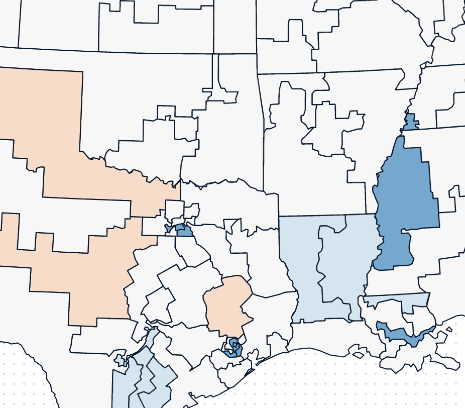
Data for Progress Maps
Embeddable D3 maps for progressive policy data, fed straight from a Google Sheet — deep links and snapshots included.
- First observed
- 2019
- With
- Noah Manger, volunteering
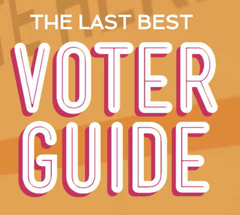
American Voter Guide
A Rails engine for building PDF + web voter guides across the Alliance for Youth Action's affiliates.
- First observed
- 2016
- Design
- Ashleigh Axios, Jen Wick
National Voter Registration Day
WordPress scaled to a static site on S3 to survive half a million holiday visitors — for tens of dollars.
- First observed
- 2016
- With
- The Bus Federation
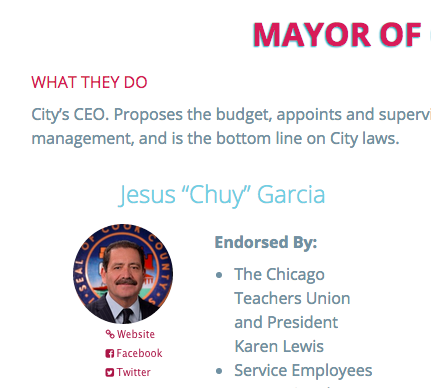
Municipal Voter Guides
Spreadsheet-to-SPA municipal voter guides hosted free on GitHub Pages — Chicago, Denver, San Antonio.
- First observed
- 2015
- With
- Chicago Votes, New Era, MOVE SA
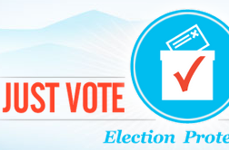
Just Vote Colorado
A one-stop voter info clearing house — registration, drop boxes, and what's on your ballot, in Spanish too. 72,000 Coloradans served.
- First observed
- 2012
- With
- Common Cause Colorado
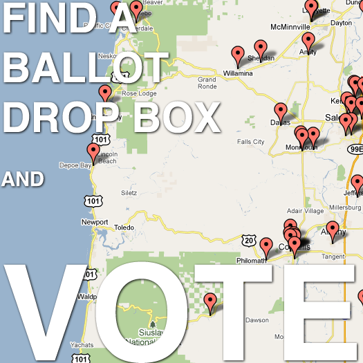
BallotDrop
Find your nearest Oregon ballot drop box — an HTML5 webapp back when the official lookup was Flash.
- First observed
- 2013
- With
- Jeremy Sher
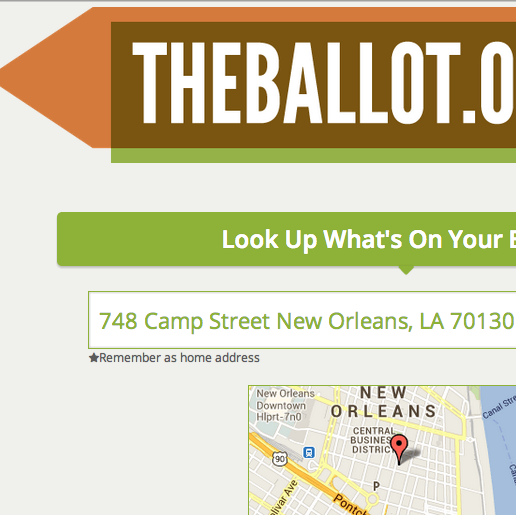
TheBallot.org & November6th.org
Yelp, but for democracy — crowd-sourced social voter guides across all 50 states. 145,000 visitors, one Snoop Dogg tweet.
- First observed
- 2012
- With
- Noah Manger, League of Young Voters
Habitat II · Software & science
Where precision matters
2013 – 2020 · 5 specimens
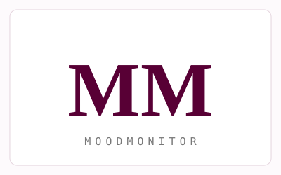
MoodMonitor
Daily text-message mood tracking for ketamine clinics — patients and doctors watching progress chart together in real time.
- First observed
- 2016
- Status
- Merged into Osmind, 2020
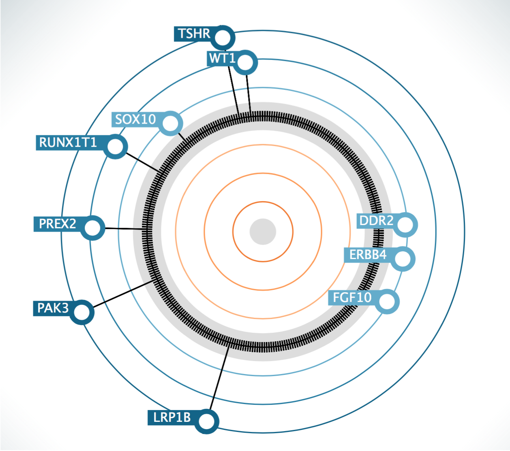
Cofactor Genomics
RNA-sequencing tumor reports — circular D3 visualizations of each sample's expression fingerprint, rendered to PDF in the lab pipeline.
- First observed
- 2016
- Diet
- CSV, straight from the sequencer
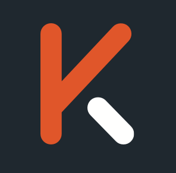
Karius
Genomic diagnostics on a three-person team — Dxter, a data-exploration tool for patients, samples, and sequence alignments.
- First observed
- 2015
- Diet
- Python pipelines on AWS
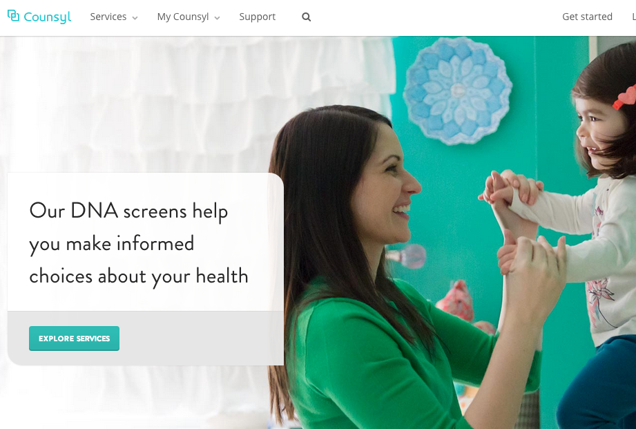
Counsyl
Rebuilding the patient experience for genetic screening — a counseling portal, on-demand appointments, and mobile-first results.
- First observed
- 2014
- With
- 50+ engineers, SF
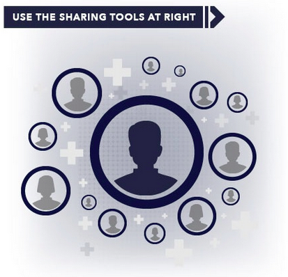
ShareProgress
A/B-tested social sharing buttons and pages — Sierra Club, Emily's List, Planned Parenthood, ACLU — 3M page views and counting.
- First observed
- 2013
- With
- Jim Pugh, Kim Muñoz
Habitat III · The early internet & client work
Where it all started
2012 – 2016 · 9 specimens
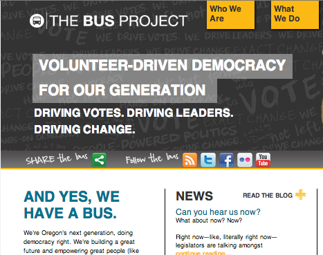
BusPress & SalsaPress
A WordPress theme + plugin that let Bus affiliates — Montana to Nigeria — spin up sites wired into a shared Salsa database. 900+ downloads.
- First observed
- 2012
- Diet
- Salsa API keys
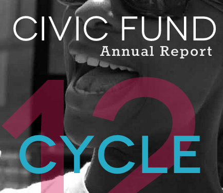
Bus Federation Annual Report
Thirty pages of a kick-ass annual year compressed into one long, scrollable, tabbed site.
- First observed
- 2013
- Design
- Mollie Ruskin, Reboot
#SoundOff @ Congress
Look up your legislators by zip and tweet at them — campaigns, embeddable widgets, and aggregated streams for HeadCount.org.
- First observed
- 2013
- Diet
- Twitter Streaming API
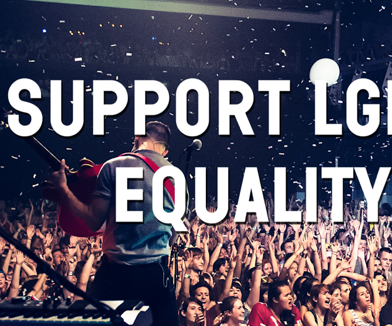
The Ally Coalition
An iPad app that toured with fun. — fans got their photo with a sign, their legislators on screen, and a tweet sent on their behalf. Every stop.
- First observed
- 2013
- Design
- Noah Manger
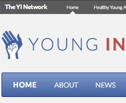
Young Invincibles
A full redesign plus the YI Bar — one brand nav across a fleet of campaign and infographic sites, managed from WordPress.
- First observed
- 2013
- Design
- Noah Manger
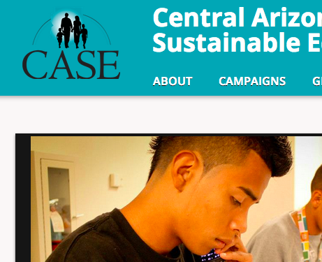
Central Arizonans for a Sustainable Economy
A friendly custom WordPress theme with every event and signup flowing into Salsa — everything on the site talks to everything else.
- First observed
- 2013
- With
- Noah Manger, Daria Ovide
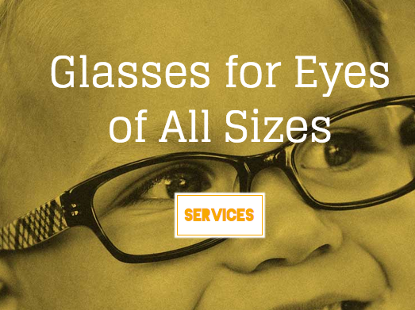
Alberta Eye Care
A photo-heavy neighborhood optometry site with background transitions, worthy of the Alberta Arts District.
- First observed
- 2012
- Design
- Mollie Ruskin
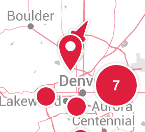
Jack in the Box
Angular + Google Maps clustering across 3,000 nationwide locations — pan the whole country for the nearest taco.
- First observed
- 2016
- With
- Struck
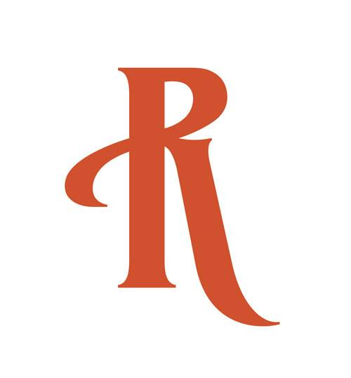
Rejuvenation
Staging-to-production sync for a large Rails/Mongo commerce stack — preview changes on production-like data before shipping.
- First observed
- 2016
- Diet
- Sidekiq jobs & REST